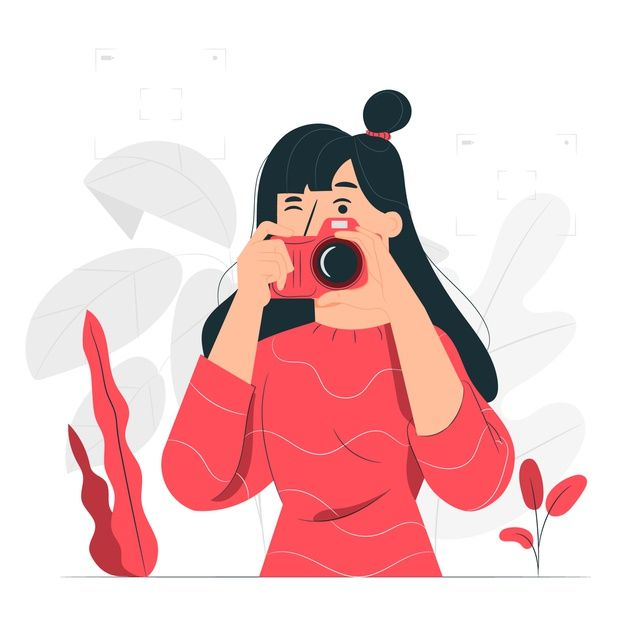
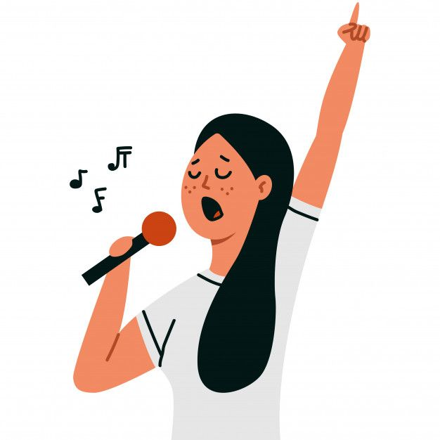
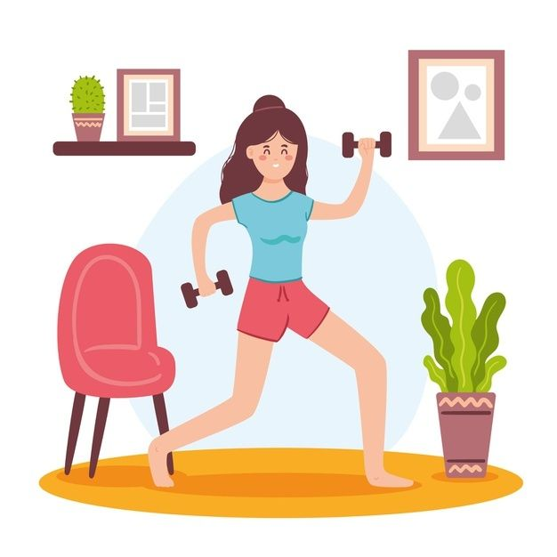
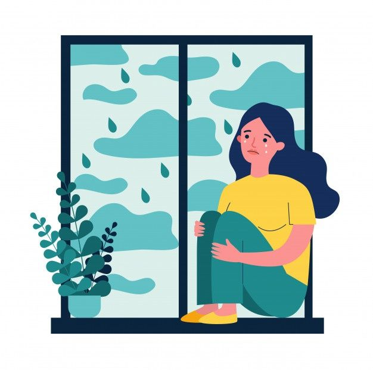

Sayamenyukai dunia fotografer dan trik-trik foto, karena pengambilan foto yang bagus merupakan seni dan
mempunyai kepuasan batin.
|

Saya suka menyanyi karena merupakan healing dan pengapresiasian diri.
|

Olahraga sangat penting,Apalagi di masa pandemi seperti ini .Saya sangat menyukainya.
|

Belajar bukan hobi tetapi kegiatan yang saya lakukan tiap hari .Dan itu rutinitas
|